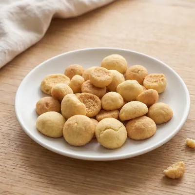
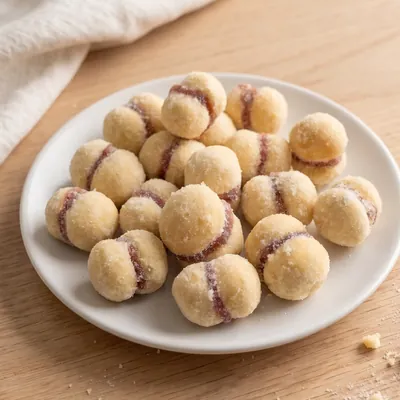
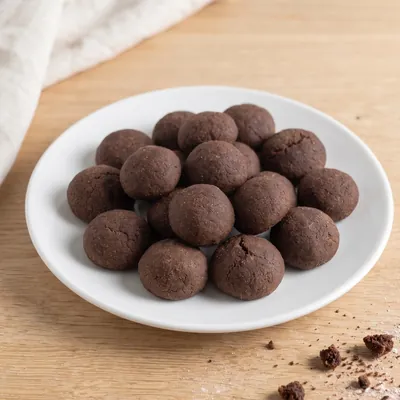
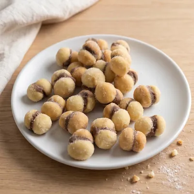
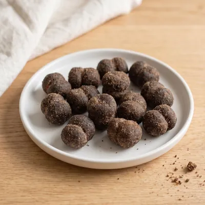
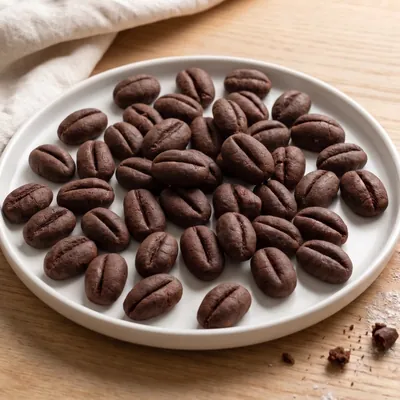

Quem faz
A Julia tem 12 anos e faz os biscoitos
Ela fez o curso de cozinheirinhos do IGA e quer ter um negócio só dela. Por enquanto, cada encomenda sai da cozinha de casa.
-

Amanteigado
Biscoito amanteigado que esfarela na mão e derrete na boca.
-

Casadinho de goiabada
Dois biscoitos amanteigados com goiabada no meio.
-

Chocolate
Biscoito amanteigado de chocolate.
-

Casadinho de creme de avelã
Dois biscoitos amanteigados com recheio de creme de avelã.
-

Casadinho de creme de avelã (chocolate)
Dois biscoitos amanteigados de chocolate com recheio de creme de avelã.
-

Café
Biscoito amanteigado com um gostinho de café que aparece no fim e quebra o doce.


Como pedir
Mandar mensagem para a Ju-
Escolha os sabores
Pode misturar quantos quiser no mesmo pedido.
-
Encomende com antecedência
A gente confirma a data pela agenda da semana.
-
Combine e receba
Entrega ou retirada em Campo Grande. Pix, débito ou crédito.